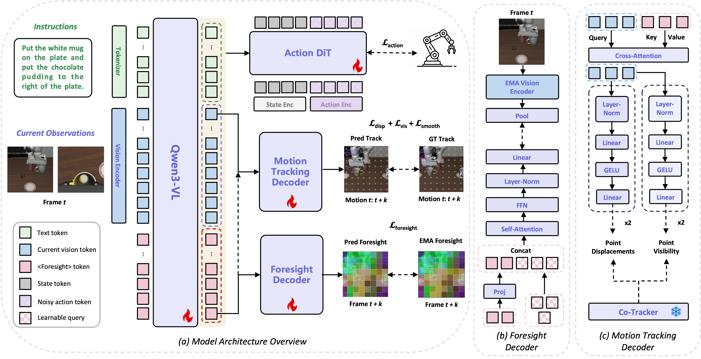
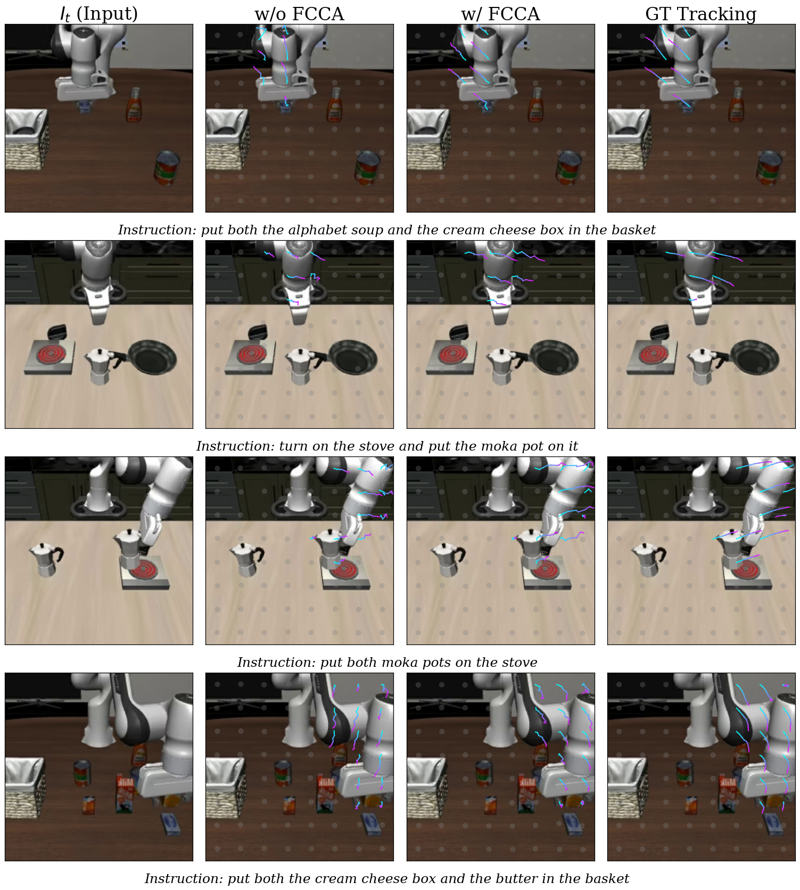
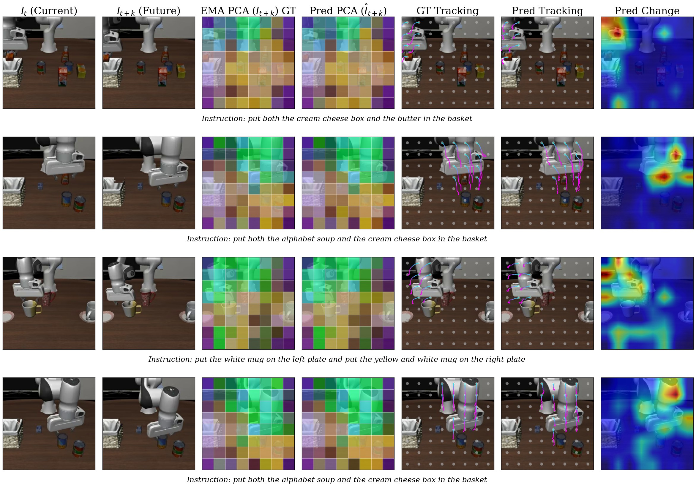
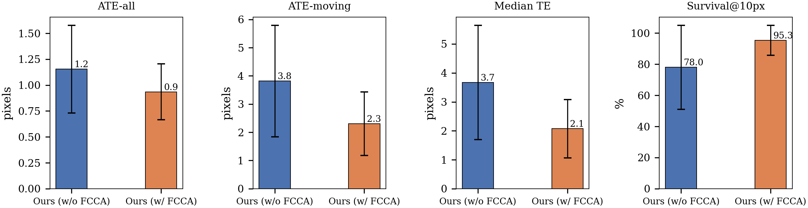

1LiAuto ·
2Institute of Computing Technology, Chinese Academy of Sciences ·
3Tsinghua University
*Equal contribution
†Project lead
‡Corresponding author
Vision-Language-Action (VLA) models have achieved impressive results in visuomotor policy learning, yet remain fundamentally reactive, mapping current observations and language to actions without explicit forward prediction of world dynamics. We posit that future scene anticipation and geometric motion tracking are complementary yet inseparable: knowing the destination constrains the path, while tracking the path reveals how to reach the destination. From this perspective, we propose ForesightVLA, a framework that augments VLA representations with explicit spatio-temporal supervision by jointly learning future visual prediction and 2D motion tracking. ForesightVLA introduces compact <Foresight> tokens to encode future visual states, decodes temporal 2D point trajectories to model geometric motion, and couples both through a lightweight Future-Conditioned Cross-Attention (FCCA) module that enables mutually reinforced reasoning between anticipated states and point dynamics. Extensive experiments on LIBERO, RoboCasa GR-1 Tabletop, and LIBERO-Plus demonstrate state-of-the-art performance and strong zero-shot generalization.
ForesightVLA augments a VLA policy with three complementary training-time branches that inject explicit spatio-temporal supervision into the shared VLM backbone. All auxiliary components are discarded at inference — adding zero latency.

Overview of ForesightVLA. Given a current observation and language instruction, the VLM backbone processes image tokens alongside K learnable <Foresight> tokens through three synergistic branches: (1) Motion tracking decoder predicts 2D point trajectories supervised by a frozen CoTracker-v3 teacher (how to move); (2) Foresight decoder predicts future visual features via an EMA teacher + MAE decoder (where to end up); (3) Future-Conditioned Cross-Attention (FCCA) bridges both objectives. At inference, only the K <Foresight> tokens remain.
We supervise VLM image token hidden states to predict dense 2D point trajectories spanning the entire action chunk. A frozen CoTracker-v3 teacher provides ground-truth displacement targets d* ∈ ℝN×T×2 and visibility labels v* ∈ {0,1}N×T. Two lightweight MLP heads decode displacements and visibility from image token hidden states, with a motion loss combining displacement regression, visibility classification, and trajectory smoothness regularization.
We append K special <Foresight> tokens to the input sequence, trained to
encode the visual features of ot+T — the last frame of the action chunk.
An EMA teacher provides stable regression targets. A lightweight MAE decoder expands the compact
K-token bottleneck to reconstruct the full M-patch target via cosine-similarity loss.
The compact bottleneck encourages global scene-level goal encoding rather than fine-grained
patch-level memorization.
A lightweight cross-attention module routes <Foresight> token representations into the motion prediction branch, explicitly conditioning displacement prediction on the anticipated goal state. Zero-initialization of the output projection ensures the pretrained VLM features are preserved at the start of training. This achieves mutual reinforcement: the foresight branch supplies a future representation, FCCA injects it into motion, and both objectives jointly shape the shared VLM backbone representations.
We evaluate on three benchmarks: LIBERO (4 suites, 10 tasks each), RoboCasa GR-1 Tabletop (24 pick-place tasks for GR-1 humanoid), and LIBERO-Plus (7-dimension zero-shot OOD robustness). All variants are built on the StarVLA-GR00T backbone.
| Method | Spatial | Object | Goal | Long | Avg. |
|---|---|---|---|---|---|
| VLA / WAM Baseline | |||||
| GR00T-N1.5 | 92.0 | 92.0 | 86.0 | 76.0 | 86.5 |
| π₀ | 96.8 | 98.8 | 95.8 | 85.2 | 94.1 |
| X-VLA | 98.2 | 98.6 | 97.8 | 97.6 | 98.1 |
| LangForce | 99.2 | 99.6 | 99.4 | 95.2 | 98.4 |
| Spatial Forcing | 99.4 | 99.6 | 98.8 | 96.0 | 98.5 |
| Future Prediction | |||||
| WorldVLA | 87.6 | 96.2 | 83.4 | 60.0 | 81.8 |
| DreamVLA | 97.5 | 94.0 | 89.5 | 89.5 | 92.6 |
| UniVLA | 96.5 | 96.8 | 95.6 | 92.0 | 95.2 |
| LaRA-VLA | 96.4 | 99.8 | 98.6 | 96.6 | 97.9 |
| HiF-VLA | 98.8 | 99.4 | 97.4 | 96.4 | 98.0 |
| Point Tracking | |||||
| FlowVLA | 93.2 | 95.0 | 91.6 | 72.6 | 88.1 |
| GeoPredict | 98.0 | 98.2 | 95.7 | 94.0 | 96.5 |
| JOPAT | 97.2 | 98.9 | 98.4 | 96.4 | 97.8 |
| ForesightVLA (Ours) | 98.4 | 99.6 | 99.4 | 97.6 | 98.8 |
| Method | Camera | Robot | Language | Light | Background | Noise | Layout | Total |
|---|---|---|---|---|---|---|---|---|
| π₀ | 13.8 | 6.0 | 58.8 | 85.0 | 81.4 | 79.0 | 68.9 | 53.6 |
| Abot-M0 | 60.4 | 67.9 | 86.4 | 96.2 | 91.6 | 86.4 | 82.6 | 80.5 |
| StarVLA | 52.5 | 49.8 | 88.5 | 95.7 | 95.7 | 73.0 | 76.9 | 74.1 |
| ForesightVLA (Ours) | 64.0 | 62.2 | 94.0 | 94.1 | 96.2 | 82.2 | 79.6 | 80.5 |

Without FCCA (left), predicted trajectories exhibit incorrect displacement directions. With FCCA (right), future-conditioned cross-attention corrects motion predictions to align with actual object motion.

Predicted foresight vs. GT future features + point tracks. The predicted foresight closely matches GT future features, and predicted tracks align with GT motion directions.

Quantitative effect of FCCA on point tracking accuracy. Incorporating future-conditioned cross-attention reduces trajectory errors (ATE-all, ATE-moving, Median TE) and substantially improves Survival@10px.
LIBERO-Long: long-horizon task
RoboCasa GR-1 pick-and-place
LIBERO-Plus zero-shot OOD
@inproceedings{foresightvla2027,
title = {Predict the Future, Track the Points:
Spatio-Temporal Foresight for
Vision-Language-Action Models},
author = {Li, Wei and Jia, Peijin and Ma, Yuan and
Jiang, Xuefeng and Jiang, Titong and
Sun, Sheng and Li, Yujian and Wen, Xin and
Hong, Han and Liu, Zhikang and Li, Bailin and
Zhan, Kun},
booktitle = {Proceedings of the AAAI Conference on
Artificial Intelligence},
year = {2027}
}